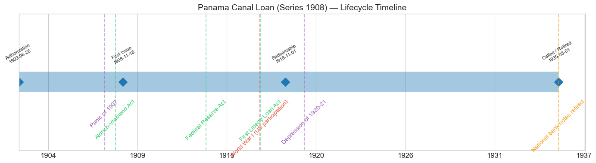
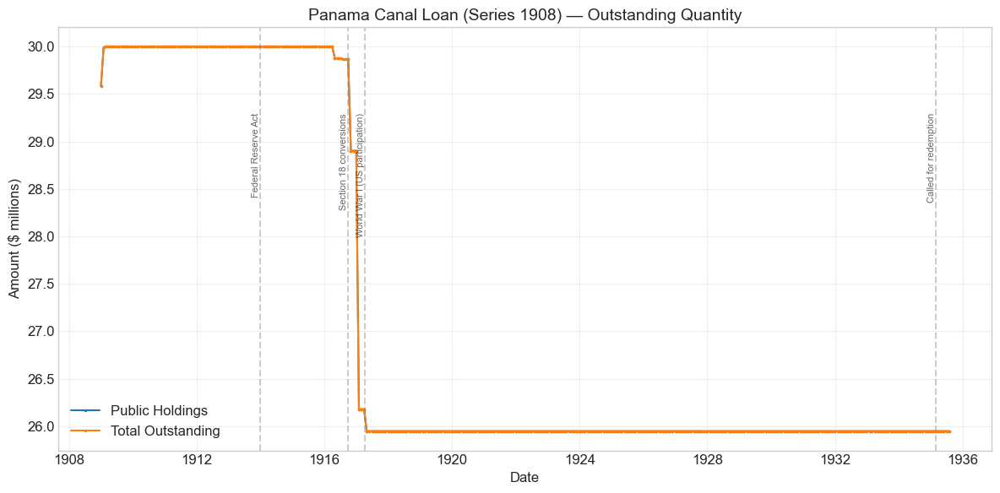
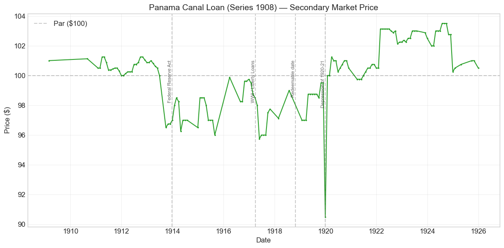
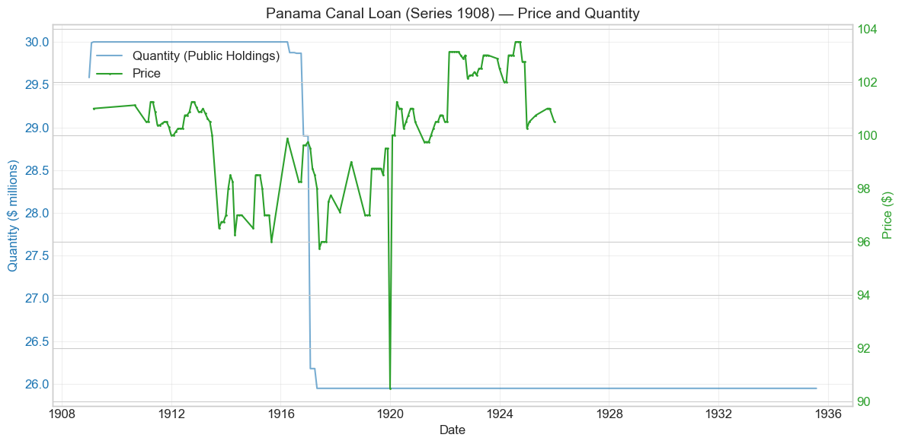
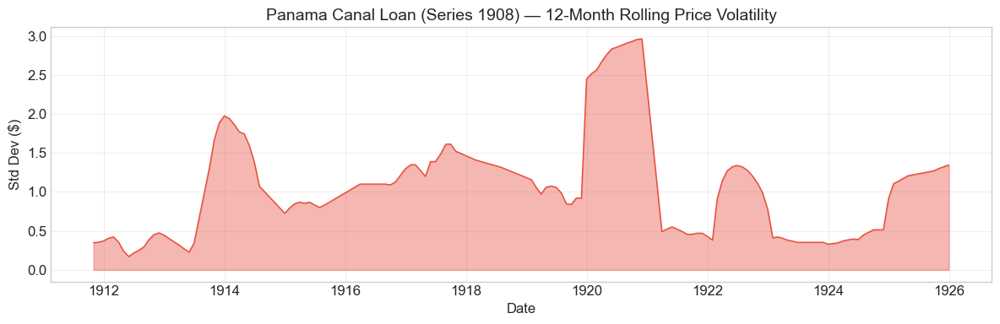

Bond Biography: Panama Canal Loan (Series 1908)#
The Middle Child of the Canal Twos#
An enhanced chapter from the Hall-Payne-Sargent US Federal Bond Database (2,857 issues, 1776–1960)
Bond ID (L1): 20133 | Category: Interest Bearing > Marketable > Panama Canal Bond
import pandas as pd
import numpy as np
import matplotlib.pyplot as plt
import matplotlib.patches as mpatches
import datetime
import warnings
warnings.filterwarnings('ignore')
plt.style.use('seaborn-v0_8-whitegrid')
plt.rcParams.update({'figure.figsize': (12, 6), 'font.size': 12,
'axes.titlesize': 14, 'axes.labelsize': 12})
# Load the bond database
store = pd.HDFStore('../data/BondDF.h5', mode='r')
BondList = store['BondList']
BondQuant = store['BondQuant']
BondPrice = store['BondPrice']
store.close()
BondQuant_T = BondQuant.transpose()
BondPrice_T = BondPrice.transpose()
bond_id = 20133
print(f'Loaded data for: Panama Canal Loan (Series 1908) (ID: 20133)')
/Users/thomassargent/anaconda3/lib/python3.9/site-packages/pandas/core/arrays/masked.py:60: UserWarning: Pandas requires version '1.3.6' or newer of 'bottleneck' (version '1.3.5' currently installed).
from pandas.core import (
Loaded data for: Panama Canal Loan (Series 1908) (ID: 20133)
Overview#
The Panama Canal Loan (Series 1908) — Bond ID 20133 in our database — was the second installment of the canal debt authorized by the Spooner Act of June 28, 1902, which empowered the President to acquire and build an isthmian canal and authorized up to $130 million of 2 percent gold bonds to pay for it. The origins of that authorization — the choice of Panama over Nicaragua, the purchase of the French company’s assets, the payment to the new Republic of Panama — belong to the first series of 1906, and this book’s chapter on the Panama Canal Loan (Series 1906) tells that story in full. By 1908 the questions of route and title were settled; what remained was earthmoving on an unprecedented scale, and earthmoving cost money. As construction expenditures mounted and the Treasury’s cash position — strained by the deposits it had pushed into the banking system during the Panic of 1907 — needed replenishing, Secretary of the Treasury George B. Cortelyou returned to the Spooner authorization and offered a further $30 million of the canal 2s in November 1908. The bonds were dated November 1908, ran thirty years to November 1, 1938, and were redeemable at the government’s option after November 1, 1918.
Like its 1906 predecessor and the great 2 percent Consols of 1930, the Series 1908 loan was a bond that no ordinary investor would buy on its coupon. Its salability at and above par rested on the circulation privilege: national banks could deposit the bonds with the Treasurer as security for their circulating notes and pay only the reduced one-half of one percent tax on circulation so secured. That regulatory machinery — how it worked, and how it made a 2 percent bond trade like a franchise license rather than a loan — is set out in this book’s chapter on the Consols of 1930 (Bond ID 20131), which readers should treat as the essential companion to this one. What is distinctive about the 1908 series is its moment: it was placed in the immediate shadow of the Panic of 1907 and the Aldrich–Vreeland Act, at the precise juncture when the bond-secured currency system it fed had just been indicted by events and placed under study by the National Monetary Commission. The offering nonetheless succeeded handsomely — sold at an average of about $102.99 per $100 — and the bond then settled into one of the quietest lives in the database: 140 monthly price observations that never stray more than a few dollars from par, a quantity series that moves exactly once, and an exit in 1935 as a footnote to the retirement of the national bank note. This is the biography of a middle child — overshadowed by its 1906 elder and its 3 percent 1911 junior, and eloquent precisely because so little ever happened to it.
Historical Context: Born of a Panic, Retired by a New Deal#
The following major events framed this bond’s lifetime:
Date |
Event |
Category |
|---|---|---|
1907-10 to 1908-02 |
Panic of 1907 |
Crisis |
1908-05-30 |
Aldrich–Vreeland Act; National Monetary Commission |
Legislation |
1908-11 |
Series 1908 offering under Secretary Cortelyou |
Fiscal |
1913-12-23 |
Federal Reserve Act |
Legislation |
1917-04-06 to 1918-11-11 |
World War I (US participation) |
War |
1917-04-24 |
First Liberty Loan Act |
Legislation |
1918-11-01 |
Bond becomes redeemable at the government’s option |
Fiscal |
1920-01 to 1921-07 |
Depression of 1920–21 |
Crisis |
1935 |
Panama 2s and Consols called; national bank notes retired |
Fiscal/Monetary |
The post-Panic placement of 1908#
The Panic of October 1907 ended before this bond existed, but it presided over the bond’s birth. The panic had exposed the central defect of the national banking system — a currency backed by government bonds could not expand when depositors demanded cash — and Congress answered in May 1908 with the Aldrich–Vreeland Act, which authorized emergency currency against broader collateral and created the National Monetary Commission whose studies would lead, five years later, to the Federal Reserve Act. Secretary Cortelyou, who had directed the Treasury’s crisis response in the autumn of 1907 by depositing public money in the New York banks, thus brought the Series 1908 loan to market at a peculiar moment: the bond-secured note system stood formally indicted, yet nothing had replaced it, and the banks’ appetite for circulation collateral remained entirely intact. Indeed, by late 1908 money was easy, the panic’s liquidation had left banks with ample reserves, and eligible 2 percent bonds were scarce — the Consols and the Series 1906 Panama 2s were largely locked in the Treasurer’s vaults. The November 1908 offering of $30 million was accordingly a comfortable success: subscriptions exceeded the amount offered many times over, allotments went overwhelmingly to national banks, and the average price realized — about $102.99 per $100, recorded in our database’s Price Sold field — stood within a couple of points of where the seasoned Consols were then quoted. A 2 percent thirty-year bond selling at a premium twelve months after the worst banking panic in a generation is, on investment logic, absurd; on franchise logic it was routine. The proceeds went to the canal, whose construction under the Army engineers was then reaching full stride.
The circulation privilege as the price-maker#
For the mechanics of circulation-privilege pricing — why banks would bid a 2 percent bond to par and beyond, and why the quoted yield on these bonds should never be read as a market interest rate — see the Consols of 1930 chapter; the Series 1908 bond obeyed the same arithmetic in miniature. Our price series opens in February 1909 at $101 and spends the pre-war years drifting between par and about $101¼, a shade below the larger and more liquid Consols, with early quotations sparse — the bond’s holders were banks with no reason to trade. The instructive contrast is with the third member of the family: when Congress, in the payable-in-gold act of August 5, 1909, allowed the remaining Spooner-Act borrowing to proceed at 3 percent without the circulation privilege, the resulting Series 1911 3s sold barely above par — a full percentage point of coupon, in effect, was the market’s measure of what the note-issuing franchise attached to the 2s was worth. That comparison, visible in the related-bonds chart below, is treated from the 1911 side in its own chapter.
The Federal Reserve Act and the family’s obsolescence#
The Federal Reserve Act of December 23, 1913 created an elastic currency and thereby doomed the rationale of the bond-secured national bank note. The threat registered plainly in this bond’s price: from $100 in mid-1913 the quotation slid to $96½ by September 1913 as the legislation moved through Congress and it briefly seemed the circulation privilege might be extinguished without compensation — the same dip, at the same moment, that carried the Consols to their all-time low. Section 18’s promise of a gradual, compensated exit steadied the market, and the modest operations actually carried out under it appear in this bond’s quantity series as its only movement: between April 1916 and April 1917, roughly $4.05 million of the Series 1908 2s were absorbed and converted — the counterpart 3 percent conversion bonds of 1946–47 appear among the related issues below — reducing the loan from $30 million to about $25.95 million, where it froze. American entry into the war suspended the program, and it was never resumed.
War, the 1918 redeemable date, and the long twilight#
World War I remade the federal debt around the Liberty Loans and made a $26 million 2 percent bond invisible as an investment; the Series 1908 loan spent the war years quoted in the high 90s, its franchise value intact but its premium gone. The optional redemption date of November 1, 1918 — which fell, as it happened, ten days before the Armistice — passed without a call: a Treasury borrowing billions at 4¼ percent had no reason to disturb a loan costing 2. The 1920s brought a gentle recovery — back above par in 1920, reaching the series’ high of $103½ in mid-1924 when market rates eased and the note-issuing franchise fattened — before regular quotation faded out in December 1925 at $100½, the float available for trading having dwindled to insignificance. The quantity series then runs flat and silent for another decade. The end came with the New Deal’s monetary reconstruction: in the spring of 1935 the Treasury, drawing on the profit from the 1934 gold devaluation, called the 2 percent Consols and the Panama Canal 2s; the Series 1908 bonds were redeemed in the summer of 1935 — our quantity series ends in July 1935 with the full $25.95 million still on the books — and with them the national bank note passed out of issue.
# Bond Lifecycle Timeline
fig, ax = plt.subplots(figsize=(14, 4))
# Key dates
dates = [('Authorization', '1902-06-28'), ('First Issue', '1908-11-18'),
('Redeemable', '1918-11-01'), ('Called / Retired', '1935-08-01')]
events = [('Panic of 1907', '1907-10-01', 'crisis'), ('Aldrich-Vreeland Act', '1908-05-30', 'legislation'), ('Federal Reserve Act', '1913-12-23', 'legislation'), ('World War I (US participation)', '1917-04-06', 'war'), ('First Liberty Loan Act', '1917-04-24', 'legislation'), ('Depression of 1920-21', '1920-01-01', 'crisis'), ('National bank notes retired', '1935-08-01', 'monetary')]
import matplotlib.dates as mdates
from datetime import datetime
# Plot bond lifetime bar
d0 = datetime.strptime(dates[0][1], '%Y-%m-%d')
d1 = datetime.strptime(dates[-1][1], '%Y-%m-%d')
ax.barh(0, (d1 - d0).days, left=mdates.date2num(d0), height=0.3,
color='#1f77b4', alpha=0.4, label='Bond Lifetime')
# Mark key dates
for label, date_str in dates:
d = datetime.strptime(date_str, '%Y-%m-%d')
ax.plot(mdates.date2num(d), 0, 'D', color='#1f77b4', markersize=10)
ax.annotate(f'{label}\n{date_str}', (mdates.date2num(d), 0.25),
ha='center', va='bottom', fontsize=8, rotation=30)
# Mark historical events
colors = {'war': '#e74c3c', 'crisis': '#9b59b6', 'legislation': '#2ecc71', 'other': '#95a5a6', 'monetary': '#f39c12'}
for name, date_str, cat in events:
d = datetime.strptime(date_str, '%Y-%m-%d')
ax.axvline(mdates.date2num(d), color=colors.get(cat, 'gray'), alpha=0.5, linestyle='--')
ax.annotate(name, (mdates.date2num(d), -0.25), ha='center', va='top',
fontsize=10, rotation=45, color=colors.get(cat, 'gray'))
ax.set_yticks([])
ax.xaxis.set_major_formatter(mdates.DateFormatter('%Y'))
ax.set_title('Panama Canal Loan (Series 1908) — Lifecycle Timeline')
ax.set_ylim(-1, 1)
plt.tight_layout()
plt.show()

Bond Features#
Feature |
Detail |
|---|---|
Name |
Panama Canal Loan (Series 1908) |
Authorizing Act |
Spooner Act, June 28, 1902 ($130 million 2% authorization) |
First Issue Date |
November 18, 1908 |
Term |
30 years; redeemable at the pleasure of the United States after November 1, 1918; payable November 1, 1938 |
Coupon Rate |
2.0% |
Payment Frequency |
Quarterly (4 times/year) |
Payable In |
Gold coin |
Price Sold |
≈ $102.99 per $100 (average realized at the November 1908 offering) |
Amount Issued |
$30.0 million |
Special Privilege |
Security for national bank note circulation, taxed at only ½% per annum — the same privilege carried by the Consols of 1930 and the Series 1906 Panama 2s |
Final Disposition |
Never called at the 1918 date; ≈$4.05 million converted under Section 18 of the Federal Reserve Act, 1916–17; remainder called and redeemed in 1935 |
# Display full bond features from database
row = BondList.loc[20133]
display_cols = [
"Treasury's Name Of Issue", 'Authorizing Act', 'Term Of Loan',
'First Issue Date', 'First Redemption Date', 'Final Redemption Date',
'Coupon Rate', 'Coupons Per Year', 'Callable', 'Coin',
'Authorized Amount', 'Price Sold'
]
print('Bond Features from Database:')
print('=' * 55)
for col in display_cols:
if col in row.index:
print(f' {col:<30} {row[col]}')
Bond Features from Database:
=======================================================
Treasury's Name Of Issue Panama Canal Loan (Series 1908)
Authorizing Act June 28, 1902
Term Of Loan 30 years
First Issue Date 1908-11-18 00:00:00
First Redemption Date NaT
Final Redemption Date NaT
Coupon Rate 2.0
Coupons Per Year 4.0
Callable 1.0
Coin 1.0
Authorized Amount nan
Price Sold 1.0299
Bond Quantity Over Time#
The bond’s outstanding quantity peaked at $30.00 million in early 1909, within weeks of issue. Data span December 1908 to July 1935 (320 monthly observations) — a full decade longer than the price series, because the bonds remained on the government’s books, immobilized as note collateral, long after active quotation had ceased.
# Bond quantity over time
fig, ax = plt.subplots(figsize=(12, 6))
for stype in ['Public Holdings', 'Total Outstanding']:
try:
s = BondQuant_T.loc[(20133, stype)]
s = s[s.notna()]
if len(s) > 0:
ax.plot(s.index, s.values / 1e6, marker='.', markersize=3, linewidth=1.5, label=stype)
except KeyError:
pass
ax.set_title('Panama Canal Loan (Series 1908) — Outstanding Quantity')
ax.set_xlabel('Date')
ax.set_ylabel('Amount ($ millions)')
ax.legend()
ax.grid(True, alpha=0.3)
events = {'1913-12-23': 'Federal Reserve Act', '1916-10-01': 'Section 18 conversions', '1917-04-06': 'World War I (US participation)', '1935-03-01': 'Called for redemption'}
for date_str, label in events.items():
d = pd.Timestamp(date_str)
ax.axvline(d, color='gray', alpha=0.4, linestyle='--')
ax.text(d, ax.get_ylim()[1]*0.97, label, rotation=90, va='top', ha='right', fontsize=8, alpha=0.7)
plt.tight_layout()
plt.show()

Quantity Analysis: One Step Down, Then Silence#
The quantity series is about as simple as a marketable loan’s can be, and its simplicity is the point.
Issue, 1908–09. The $30 million came out essentially at once: $29.58 million on the books at the end of December 1908, the full $30.00 million by February 1909 as the last allotments were delivered. Unlike the Consols, which grew by successive conversion waves over seven years, the Series 1908 loan was a single cash sale — the Treasury needed canal money, not a refunding.
The Section 18 step, 1916–17. The loan’s only reduction is the staircase of small decrements between April 1916 and April 1917 — the largest, about $2.7 million, in January 1917 — totaling roughly $4.05 million. This is Section 18 of the Federal Reserve Act at work: Federal Reserve Banks acquiring 2 percent bonds from member banks and exchanging them for 3 percent conversion bonds (without the circulation privilege) and one-year Treasury notes, the same program that removed about $46 million of Consols in the same months. American entry into the war halted the program, and it was never resumed.
The plateau, 1917–1935. From April 1917 the series is a flat line at $25.95 million for eighteen years — through the Liberty Loans, the 1920–21 depression, the un-exercised redemption date of November 1918, and the banking collapse of the early 1930s. The bonds sat in the Treasurer’s vaults securing national bank notes, no longer really a market instrument at all. The series ends in July 1935, on the eve of the redemption that followed the Treasury’s 1935 call of the 2 percent family, with every dollar of the $25.95 million paid at par.
Secondary Market Prices#
Overall Statistics (1909-02-28 to 1925-12-31): Mean $100.02, Range $90.5–$103.5, Std Dev $2.18, 140 observations.
By Period:
Period |
Mean |
Std |
Min |
Max |
Obs |
|---|---|---|---|---|---|
Issue to End (1908-11 to 1925-12) |
$100.02 |
$2.18 |
$90.5 |
$103.5 |
140 |
A mean of $100.02 over seventeen years is a number worth pausing on: a 2 percent bond, in an era when prime corporate bonds yielded 4 to 5 percent and Liberty bonds carried 3½ to 4¼, averaging exactly par. As with the Consols of 1930, this price should not be read as a market interest rate on United States credit; it is the capitalized value of the national bank circulation privilege superimposed on par, and it moved only when the franchise moved. The pre-war observations sit quietly between $100 and $101¼; the one sustained trip below par begins with the Federal Reserve legislation of 1913 (down to $96½ that September) and lasts through the war years, when the franchise’s eventual extinction was certain and only its timing unknown; the 1920s recovery to the series high of $103½ in 1924 tracks the fat postwar profitability of note issue. Quotations are sparse in the bond’s first two years and end altogether in December 1925 — with roughly $26 million locked in the Treasurer’s vaults, there was almost nothing left to trade.
# Annotated price chart
fig, ax = plt.subplots(figsize=(12, 6))
s = BondPrice_T.loc[(20133, 'Average')]
s = pd.to_numeric(s, errors='coerce').dropna()
if len(s) > 0:
ax.plot(s.index, s.values, marker='.', markersize=3, linewidth=1.5, color='#2ca02c')
ax.axhline(100, color='black', alpha=0.2, linestyle='--', label='Par ($100)')
ax.set_title('Panama Canal Loan (Series 1908) — Secondary Market Price')
ax.set_xlabel('Date')
ax.set_ylabel('Price ($)')
ax.legend()
ax.grid(True, alpha=0.3)
events = {'1913-12-23': 'Federal Reserve Act', '1917-04-06': 'WWI / Liberty Loans', '1918-11-01': 'Redeemable date', '1920-01-01': 'Depression of 1920-21'}
for date_str, label in events.items():
d = pd.Timestamp(date_str)
ax.axvline(d, color='gray', alpha=0.4, linestyle='--')
ax.text(d, ax.get_ylim()[1]*0.97, label, rotation=90, va='top', ha='right', fontsize=8, alpha=0.7)
plt.tight_layout()
plt.show()

# Price and Quantity — dual-axis chart
fig, ax1 = plt.subplots(figsize=(12, 6))
# Quantity (left axis)
for stype in ['Public Holdings', 'Total Outstanding']:
try:
q = BondQuant_T.loc[(20133, stype)]
q = q[q.notna()]
if len(q) > 0:
ax1.plot(q.index, q.values / 1e6, color='#1f77b4', alpha=0.6, label=f'Quantity ({stype})')
break
except KeyError:
pass
ax1.set_xlabel('Date')
ax1.set_ylabel('Quantity ($ millions)', color='#1f77b4')
ax1.tick_params(axis='y', labelcolor='#1f77b4')
# Price (right axis)
ax2 = ax1.twinx()
p = BondPrice_T.loc[(20133, 'Average')]
p = pd.to_numeric(p, errors='coerce').dropna()
if len(p) > 0:
ax2.plot(p.index, p.values, color='#2ca02c', marker='.', markersize=2, label='Price')
ax2.set_ylabel('Price ($)', color='#2ca02c')
ax2.tick_params(axis='y', labelcolor='#2ca02c')
ax1.set_title('Panama Canal Loan (Series 1908) — Price and Quantity')
ax1.grid(True, alpha=0.3)
fig.legend(loc='upper left', bbox_to_anchor=(0.1, 0.9))
plt.tight_layout()
plt.show()

Detected Price/Quantity Events, Explained#
Only two movements in seventeen years of quotations were large enough to trip the database’s event detector, and they are two halves of the same non-event:
Date |
Type |
Change |
Explanation |
|---|---|---|---|
1919-12 |
Price drop |
−9.1% |
The quotation falls from $99½ to $90½ in a single month… |
1920-01 |
Price spike |
+10.5% |
…and returns to $100.00 the next. |
A genuine nine-point collapse and full recovery inside two months would be extraordinary for any government bond, let alone one whose price was administratively propped and whose float was minuscule. Nothing in the bond’s fundamentals — credit, coupon, privilege, or quantity — changed in December 1919, and no comparable move appears in the Consols or the Series 1906 2s. The December 1919 print of $90½ is best read as a quotation artifact of an extremely thin market: a stray or flat-quoted transaction, or a recording anomaly, in a security that sometimes went months without a trade (note the gaps elsewhere in the series). Year-end 1919 was, to be sure, a moment of severe money-market strain — call rates spiked as the Federal Reserve began tightening into the 1920–21 depression — and a forced sale at a concession is not impossible; but the instant, complete reversal argues against reading any durable repricing into it. We flag it rather than explain it away with a story the evidence cannot support.
The movements the detector ignores are the historically meaningful ones: the slide from $100 to $96½ in the autumn of 1913, as the Federal Reserve Act threatened the circulation privilege; the long wartime residence in the high 90s, when Liberty coupons made a 2 percent bond an anachronism; and the climb to $103½ in 1924, when easy money made the note-issuing franchise unusually profitable and banks bid up the scarce stock of eligible 2s — the same franchise repricing that lifted the Consols above $106 in 1919. Each of these unfolded too gradually to register as an “event,” which is itself a fact about how this bond’s price was made.
Price Volatility#
Maximum drawdown: −10.6% (from the peak of $101.25 on March 31, 1911 to the trough of $90.50 on December 31, 1919 — and more than half of that “trough” is the single aberrant quotation discussed above)
Average monthly return: 0.006%
By the standards of this database these are among the most placid numbers on record — compare the −27.9 percent wartime collapse of the Louisiana Sixes — and setting aside the December 1919 print, the bond’s true range over seventeen years was barely seven dollars. The rolling-volatility chart below is correspondingly flat, with two interpretable flares: the repricing around the Federal Reserve legislation of 1913–14, and the spike manufactured by the 1919–20 quotation whipsaw. The Panic-scarred birth year, the World War, and the 1920–21 depression — events that convulsed every open market in New York — barely register. When a bond’s marginal holder is a regulated bank doing franchise arithmetic rather than a speculator, its volatility measures the stability of the regulation, not of the market.
# Rolling volatility (12-month window)
p = BondPrice_T.loc[(20133, 'Average')]
p = pd.to_numeric(p, errors='coerce').dropna()
if len(p) >= 12:
rolling_std = p.rolling(window=12).std().dropna()
fig, ax = plt.subplots(figsize=(12, 4))
ax.fill_between(rolling_std.index, rolling_std.values, alpha=0.4, color='#e74c3c')
ax.plot(rolling_std.index, rolling_std.values, color='#e74c3c', linewidth=1)
ax.set_title('Panama Canal Loan (Series 1908) — 12-Month Rolling Price Volatility')
ax.set_xlabel('Date')
ax.set_ylabel('Std Dev ($)')
ax.grid(True, alpha=0.3)
plt.tight_layout()
plt.show()
else:
print('Insufficient data for rolling volatility (need >= 12 observations)')

Issuance, Distribution, and Redemption#
The sale. The Series 1908 loan was a conventional public offering, announced by Secretary Cortelyou in the autumn of 1908 and dated November 1908: $30 million of thirty-year 2 percent gold bonds, in registered and coupon form in the customary denominations, sold by public subscription with allotment to the highest bidders. The offering was oversubscribed many times over, and the average price realized was about $102.99 per $100 — a premium that only the circulation privilege can explain, since the same market priced privilege-free government 3s barely above par a few years later. The real buyers, directly or at one remove, were national banks: the bonds’ economic value lay in the note circulation they could secure, and the bulk of the issue migrated promptly into the Treasurer’s vaults as collateral, where it stayed. The premium, incidentally, went to the canal fund along with the principal — the Treasury booked the whole proceeds against canal expenditure.
A note of caution on details. The general shape of the sale — the amount, the timing, the premium, the oversubscription, the bank-dominated demand — is well documented in the Treasury’s Annual Reports and contemporary financial commentary. Finer particulars (the exact subscription total, the allotment schedule, the roster of bidders) vary across secondary accounts, and we deliberately refrain from citing precise figures we cannot verify against the primary record.
Redemption. The bond’s own calendar — redeemable after November 1, 1918, payable November 1, 1938 — turned out to govern nothing. The 1918 option date passed unexercised in the week of the Armistice; the 1938 maturity was never reached. Instead the bond’s exit followed the logic of its birth: it lived by the national bank note, and it died with it. After the Section 18 conversions of 1916–17 removed $4.05 million, the remaining $25.95 million sat as frozen collateral until the Treasury — armed with the book profit from the 1934 gold devaluation, and with the national bank note redundant beside Federal Reserve currency — called the 2 percent Consols and the Panama Canal 2s in the spring of 1935. The Series 1908 bonds were paid off at par that summer (the gold clause by then abrogated, like all such clauses, by the Joint Resolution of June 1933), the deposited bonds came out of the vaults, and the notes they secured were retired from circulation. Our quantity series ends in July 1935, one month short of the payoff it records the approach of.
Implications and Legacy#
A stress test the franchise passed. The most interesting fact about the Series 1908 loan is the date on its face. It was sold at a premium — a 2 percent coupon commanding $103 — twelve months after the Panic of 1907 had demonstrated, at enormous cost, that the bond-secured currency these bonds existed to serve was a defective design; six months after Congress had said so in the Aldrich–Vreeland Act; and while the National Monetary Commission was drafting the indictment in detail. The market, in other words, priced the circulation franchise as durable even as its abolition was being studied — and the market was right for another quarter century. Regulatory rents die slowly, and the price of this bond is a 27-year measurement of exactly how slowly.
The canal on the installment plan. With the Series 1906 and 1908 sales the Treasury had raised $84.6 million of the Spooner Act’s $130 million at 2 percent — a rate no other sovereign could touch, achievable only because the bonds were bundled with a bank-note license. That the next installment, the Series 1911, had to carry 3 percent once Congress withheld the privilege is the cleanest natural experiment in the database on what the bundling was worth. The Panama story from the canal’s side — the diplomacy, the French company, the earthmoving — belongs to the Series 1906 chapter; the Series 1908 contribution to it was simply $30.9 million of cash, delivered without drama at a moment when drama might have been expected.
A well-behaved data problem. For users of the Hall–Payne–Sargent database, this bond is a compact object lesson in two recurring cautions. First, its quoted yield — around 2 percent or below for most of its quoted life — is not the riskless rate of the United States; it is a bond price with a franchise value inside it, which is why Payne, Szőke, Hall & Sargent (2025) exclude the circulation-privilege 2s from clean measures of the government’s borrowing cost. Second, its single detected “event” — the December 1919 plunge and January 1920 recovery — is almost certainly an artifact of thin quotation rather than a market episode: a reminder that in small, immobilized issues, the price series records the sociology of quotation as well as the economics of valuation.
The quiet middle child. Between the 1906 series, which carries the canal’s origin story, and the 1911 series, which marks the privilege’s end, the 1908 series owns only its moment of birth — the post-Panic placement — and its long, nearly eventless middle age. But the eventlessness is the historical finding. Through a world war, a postwar deflation, and the passing of its own redemption date, the bond’s price barely moved and its quantity moved once, because both were fixed not by markets but by an interlocking set of statutes. When the statutes changed in 1913 the price dipped; when they were unwound in 1935 the bond vanished. Few securities in the database demonstrate so purely that a government bond can be, for its whole life, a piece of monetary plumbing — and that the plumbing, while it lasted, never leaked: every coupon and every dollar of principal was paid in full.
References#
Primary Sources#
An Act to provide for the construction of a canal connecting the waters of the Atlantic and Pacific oceans (Spooner Act), June 28, 1902 (authorizing up to $130 million of 2 percent bonds).
An Act of August 5, 1909 (authorizing the remaining Panama Canal borrowing at 3 percent, without the circulation privilege — the basis of the Series 1911).
Gold Standard Act, March 14, 1900 (the ½ percent circulation tax on 2 percent bonds).
Federal Reserve Act, December 23, 1913, especially Section 18 (refunding of the 2 percent bonds).
Joint Resolution of June 5, 1933 (abrogation of gold clauses) and Gold Reserve Act of January 30, 1934.
Annual Reports of the Secretary of the Treasury, 1907–1935, especially the report of George B. Cortelyou (1908) on the Panic response and the Panama Canal loan, and of Henry Morgenthau, Jr. (1935) on the retirement of the 2 percent bonds and national bank notes.
Annual Reports of the Comptroller of the Currency, 1908–1935 (bonds on deposit as security for circulation).
Scholarly Works#
Friedman, M. & Schwartz, A. J. (1963). A Monetary History of the United States, 1867–1960. Princeton: Princeton University Press. (Chs. 4–8 on 1907, Aldrich–Vreeland, the Federal Reserve, and the 1930s.)
Noyes, A. D. (1909). Forty Years of American Finance. New York: G. P. Putnam’s Sons. (On the Panic of 1907 and its aftermath.)
Timberlake, R. H. (1993). Monetary Policy in the United States: An Intellectual and Institutional History. Chicago: University of Chicago Press. (On the bond-secured currency and its inelasticity.)
Homer, S. & Sylla, R. (2005). A History of Interest Rates, 4th ed. Hoboken: Wiley. (On the anomalously low quoted yields of the circulation-privilege 2s.)
Payne, J., Szoke, B., Hall, G. & Sargent, T. (2025). “Costs of Financing US Federal Debt Under a Gold Standard: 1791–1933.” Quarterly Journal of Economics.
General Histories#
Dewey, D. R. (1918). Financial History of the United States. New York: Longmans, Green and Co.
Studenski, P. & Krooss, H. E. (1952). Financial History of the United States. New York: McGraw-Hill.
See also, in this database, the companion chapters on the Consols of 1930 (Bond ID 20131), which develops the circulation-privilege framework on which this bond’s price rested, and on the Panama Canal Loan (Series 1906), which tells the canal-finance origin story in full; the Series 1911 chapter treats the family’s 3 percent coda.
Enhanced Bond Biography generated from the Hall-Payne-Sargent Bond Database. Narrative enrichment draws principally on the Spooner Act, the Treasury and Comptroller Annual Reports, Noyes (1909), Friedman & Schwartz (1963), and Timberlake (1993).